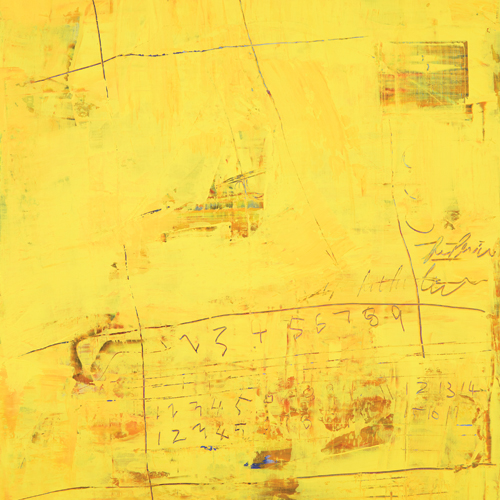
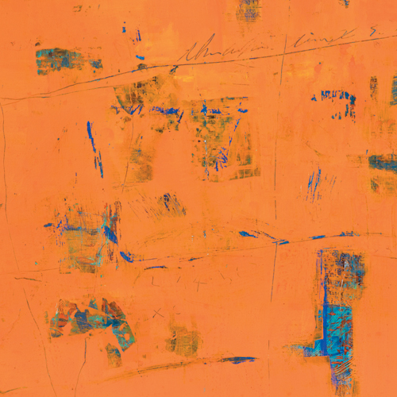
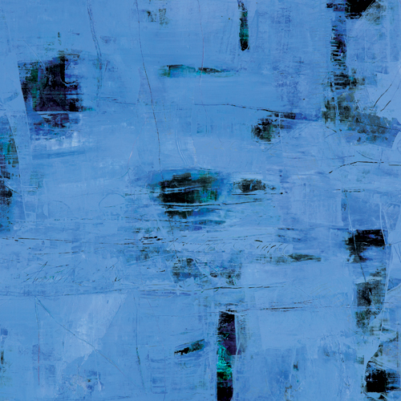
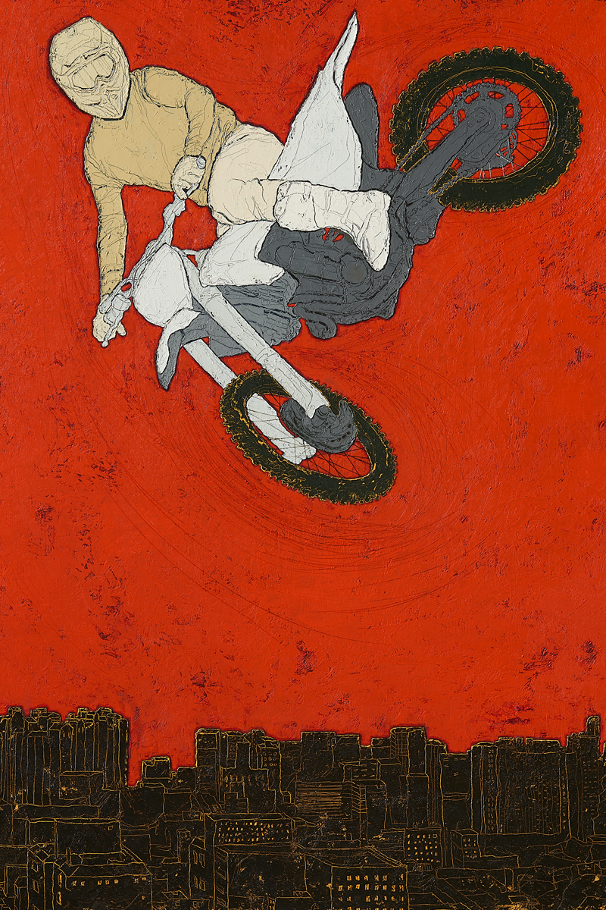
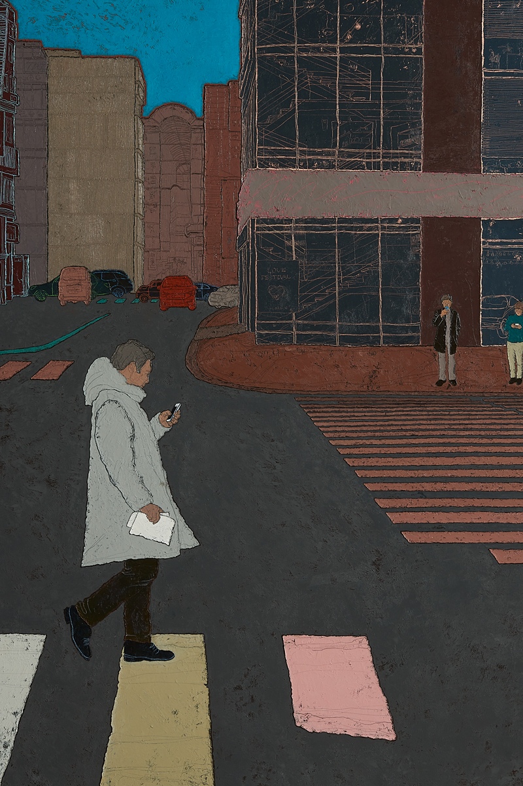
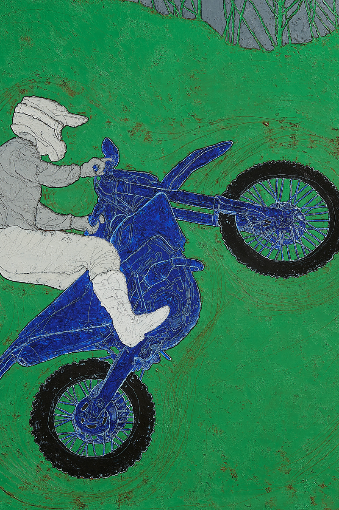

-
mom
labal -
momlabel갤러리 써포먼트
1,745
#서래마을#서래마을갤러리#갤러리#전시회#문화생활#전시스타그램#갤러리써포먼트
여유로움 속, 나만의 감성 채우기
문화생활을 즐기는 것이 어렵다고 느끼는 맘들이 있다면, 조금은 생각을 달리해봐도 좋을 것 같습니다.
큰 시간을 들일 필요없이 그저 이끌리는 작품으로 발길을 움직이는 것만으로 충분하답니다.
서래마을에 위치한 ‘갤러리 써포먼트’는 다양한 작가들의 작품을 직접 보고
구매도 할 수 있는 공간으로, 작지만 알찬 작품들을 만나보기에 좋은 공간입니다.
조용한 오전, 브런치 타임 후 여유롭게 전시회를 즐겨보는 건 어떨까요?
- 
유수미06 trace Acrylic on Canvas 91x73.0 2017
- 
유수미08 trace Acrylic on Canvas 80x80 2017
- 
유수미03 trace Acrylic on Canvas 91x73.0 2017
오전의 브런치 타임으로 배를 채운 후, 감성 또한 채우고 싶다면 이곳을 추천한다. 서래마을에 위치한 갤러리 써포먼트는 역량 있는 현대미술 작가들을 국내외에 소개하고 예술가와 소비자와의 매개체로서 자리 잡고 있다. 갤러리 써포먼트 오수정 대표는 미술 전공자 출신으로 전시 기획, 아트 마케팅 강의도 펼치고 있다. 그리고 일상생활에서 미술의 대중화를 위해 끊임없이 고민해왔다. 그녀가 “갤러리 써포먼트에서 전시하는 작가와 작품은 믿고 볼만하며, 살만하다”라고 말할 수 있는 것은 10년 이상의 아트컨설팅의 축적된 노하우와 해외시장의 트렌드와 컬텍터의 취향을 잘 알고 있기 때문이다. 2017년 열린 싱가포르 컨템퍼러리에서는 국내 현대미술작가들을 세계적으로 알리고 많은 컬렉터와 예술을 사랑하는 관람객들의 눈길을 사로 잡기도 했다.
#다가오는 전시 Check! 오는 9월 7일부터 10월 1일까지는 유수미 작가의 초대전이 열린다. 유수미 작가는 “일상을 심미(審美)화한다는 것은 곧 일상의 아름다운 것에 대하여 새로운 의미를 발견하는 일이다”라고 말한다. 유수미 작가의 작업은 기억 속 어딘가 있었지만, 그러나 미처 인식하지 못했던 일상의 낯선 의미를 반추한다. 그리고 일상에서 드러나지 않고 숨은 삶의 조각들을 비재현적인 방식으로 구성해 보여준다.
기호나 숫자, 수평과 수직의 굵은 선묘들은 작가 자신의 감성에 의해 남겨진 것이다. 작가는 은유적이면서 자신의 신체 리듬의 흔적을 화면에 남기고자 하였다. 나 자신의 일정한 질서 안에서 본능적이고 우연적인 것들로 표현하였다. 유수미 작가는 이러한 과정을 통해 더욱 진실된 내 모습과 마주하는 방법을 감상자들과 공유하고, 또 다른 한편으로 자신의 작업에 대한 작은 초석을 마련하고자 한다.
- 
Escape from the city 100x72.7cm Oil on canvas 2017
- 
5-30 pm 162x130.3cm Oil on canvas 2017
- 
Big air excitement 100x72.7cm Oil on canvas 2017
이어 진행되는 권혜조 작가의 전시는 10월 5일부터 24일까지 만나볼 수 있다. 권혜조 작가는 “일상은 가장 평화롭고 여유로운 시간이지만, 동시에 자유롭고 강한 에너지 위에 놓여있다”고 말한다. 두꺼운 물감 층으로 편안한 느낌을 주는 면을 만들고, 금속 도구를 이용해 강한 선으로 일상의 장면을 드로잉 했다. 익숙한 광경이지만, 익숙하다고 스쳐 지나가지 않게 가슴에 각인하고 싶다는 작가의 의도를 볼 수 있다. 권혜조 작가는 작품을 통해 평범한 일상을 얻기 위해서는 노력과 수고의 과정을 거쳐야 하며, 그 과정을 통해 흔한 일상을 가치를 가진다고 전한다.
갤러리 써포먼트는 여유롭고 편안하게 그림을 감상하며, 작가들의 작품세계를 들여다볼 수 있는 공간이다. 요즘 결혼, 집들이, 승진 등 축하 선물로 하나의 작품을 선호하는 경우가 많아지면서, 실제로 이곳에 방문해 작품을 수집하는 분들도 있다고 한다. “일반인과 아트 작품 사이의 간극을 좁혀 부담 없이 작품을 감상하고 구입할 수 있게 하고 싶다”는 취지에 맞게 다양한 가격대의 아트 프린트와 원화를 선보이고 있다.
문화를 만나는 법은 생각보다 어렵지 않다. 나에게서 가장 가까운 곳부터 천천히 발길을 내디뎌 보는 것이다. 이곳에서 다양하게 선보이는 전시를 통해 감성 또한 채우는 시간을 가져보길 바란다.
- 서울특별시 서초구 사평대로 22길 41 4층
- OPENING HOURS
- Monday–Friday 10 am – 7 pm
- Saturday 11 am – 6 pm
- Sunday, holidays 11 am - 5 pm
- 070-8244-0604
- http://www.gallerysuppoment.com
- Editor. 김다인
- 사진제공. 갤러리 써포먼트